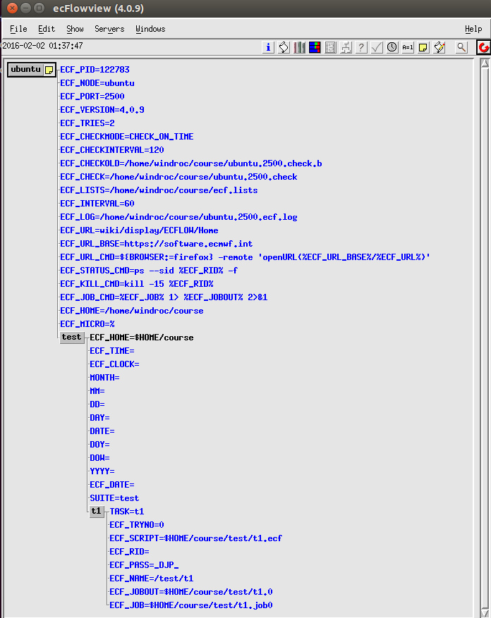

加载文件
下一步就是让 ecflow_server 知道你的 suite，或者称为加载 suite definition 文件。
这一步将检查 test.def 文件，并向 ecflow_server 描述 suite。可以通过多种方法实现，取决于 suite 的创建方式。
注意：从下面的两种方法中选择一种方法，避免两次加载 suite definition 时会出现的错误。
文本
在 ECF_HOME 目录执行下面的命令
$ecflow_client --load=test.def --port=33083
这将检查并加载 suite definition 到 ecflow_server。如果检查失败，suite 不会被加载。
之前的章节中提到过 ecflow_client，该命令被用在 head.h 和 tail.h 头文件中。
注：请确保已经设置 ECF_HOST 和 ECF_PORT 环境变量，否则需要在命令行中使用 --host 和 -–port 参数。
加载 suite 后的 ecflowview

译者注：
为了测试另一种方式，需要删除 ecflow 服务中的 suite，使用 ecflow_client --delete 命令：
$ecflow_client --host=login05 --port=33083 --delete=/test
Are you sure want to delete nodes at paths:
/test ? y
Python
使用 Python 脚本将 defs 写为 .def 定义文件，在 suite 定义比较复杂的时候对调试很有帮助。
import os
from pathlib import Path
from ecflow import Defs, Suite, Task, Edit
print("Creating suite definition")
home = os.path.abspath(Path(Path(__file__).parent, "../../../build/course"))
defs = Defs(
Suite('test',
Edit(ECF_HOME=home),
Task('t1')))
print(defs)
print("Checking job creation: .ecf -> .job0")
print(defs.check_job_creation())
print("Saving definition to file 'test.def'")
defs.save_as_defs(str(Path(home, "test.def")))
# To restore the definition from file 'test.def' we can use:
# restored_defs = ecflow.Defs("test.def")
输出结果：
$python test.py
Creating suite definition
# 4.8.0
suite test
edit ECF_HOME 'PROJECT_ROOT/build/course'
task t1
endsuite
Checking job creation: .ecf -> .job0
Saving definition to file 'test.def'
运行上述脚本后，生成的 def 文件内容如下：
# 4.8.0
suite test
edit ECF_HOME 'PROJECT_ROOT/build/course'
task t1
endsuite
可以使用上面的方法通过命令行接口加载 def 文件。
因为 Suite Definition API 在内存中建立 definition，所以可以直接加载到 ecflow_server 中，用 ecflow.Client 类实现。
在之前的 test.py 文件结尾添加如下代码：
try:
print("Load the in memory definition(defs) into the server")
ci = Client('login05', '33083')
ci.load(defs)
except RuntimeError as e:
print("Failed:", e)
运行修改后的代码：
$ python test.py
Creating suite definition
# 4.0.9
suite test
edit ECF_HOME '/home/windroc/course'
task t1
endsuite
Checking job creation: .ecf -> .job0
Saving definition to file 'test.def'
Load the in memory definition(defs) into the server
在 ecflow_ui 中可以看到 test 已加载到 ecflow 服务中。

此时服务处于 halted 状态，需要手动开启服务。
$ecflow_client --begin --host=login05 --port=33083
因为没有添加任何触发机制，在服务开始后，t1 就会立即执行，执行结束后的状态如下：

强烈建议创建 suite definition 和将它加载到服务器的过程分开。加载过程应该放到一个文件中，例如下面的 client.py 文件。
import os
from pathlib import Path
import ecflow
home = os.path.abspath(Path(Path(__file__).parent, "../../../build/course"))
try:
print("Loading definition in 'test.def' into the server")
ci = ecflow.Client('login05', '33083')
ci.load(str(Path(home, "test.def"))) # read definition from disk and load into the server
except RuntimeError as e:
print("Failed:", e)
测试结果：
$python test_client.py
Loading definition in 'test.def' into the server
如果一切顺利，server 中应该有 suite 的定义。ecflow_server 的日志文件中会记录 ecflow_client 的调用情况：
MSG:[14:07:06 30.1.2018] --delete yes /test :wangdp
...
MSG:[14:08:05 30.1.2018] --load=/g3/wangdp/project/study/ecflow/ecflow-tutorial-code/build/course/test.def :wangdp
...
MSG:[14:09:14 30.1.2018] --begin :wangdp
LOG:[14:09:14 30.1.2018] queued: /test
LOG:[14:09:14 30.1.2018] queued: /test/t1
LOG:[14:09:14 30.1.2018] queued: /
LOG:[14:09:14 30.1.2018] submitted: /test/t1 job_size:1843
LOG:[14:09:14 30.1.2018] submitted: /test
LOG:[14:09:14 30.1.2018] submitted: /
MSG:[14:09:14 30.1.2018] chd:init /test/t1
LOG:[14:09:14 30.1.2018] active: /test/t1
LOG:[14:09:14 30.1.2018] active: /test
LOG:[14:09:14 30.1.2018] active: /
MSG:[14:09:14 30.1.2018] chd:complete /test/t1
LOG:[14:09:14 30.1.2018] complete: /test/t1
LOG:[14:09:14 30.1.2018] complete: /test
LOG:[14:09:14 30.1.2018] complete: /
...
任务
- 加载定义文件。从上述两种方法中选择一种。
- 如果使用python方式，检查
test.def并创建client.py - 查看日志文件
备注
如果遇到重复加载两次 suite 的错误，可以删掉服务器中的 suite
ecflow_client --delete /test
然后 definition 可以被重新加载。
或者使用 replace 替换 suite，请查看相关帮助
$ecflow_client --help replace
replace
-------
Replaces a node in the server, with the given path
Can also be used to add nodes in the server
arg1 = path to node
must exist in the client defs(arg2). This is also the node we want to
replace in the server
arg2 = path to client definition file
provides the definition of the new node
arg3 = (optional) [ parent | false ] (default = parent)
create parent families or suite as needed, when arg1 does not
exist in the server
arg4 = (optional) force (default = false)
Force the replacement even if it causes zombies to be created
Replace can fail if:
- The node path(arg1) does not exist in the provided client definition(arg2)
- The client definition(arg2) must be free of errors
- If the third argument is not provided, then node path(arg1) must exist in the server
- Nodes to be replaced are in active/submitted state, in which case arg4(force) can be used
After replace is done, we check trigger expressions. These are reported to standard output.
It is up to the user to correct invalid trigger expressions, otherwise the tasks will *not* run.
Please note, you can use --check to check trigger expression and limits in the server.
For more information use --help check.
Usage:
--replace=/suite/f1/t1 /tmp/client.def parent # Add/replace node tree /suite/f1/t1
--replace=/suite/f1/t1 /tmp/client.def false force # replace t1 even if its active or submitted
The client reads in the following environment variables. These are read by user and child command
|----------|----------|------------|-------------------------------------------------------------------|
| Name | Type | Required | Description |
|----------|----------|------------|-------------------------------------------------------------------|
| ECF_NODE | <string> | Mandatory* | The host name of the main server. defaults to 'localhost' |
| ECF_PORT | <int> | Mandatory* | The TCP/IP port to call on the server. Must be unique to a server |
|----------|----------|------------|-------------------------------------------------------------------|
* The host and port must be specified in order for the client to communicate with the server, this can
be done by setting ECF_NODE, ECF_PORT or by specifying --host <host> --port <int> on the command line
简要说明
# 替换整个 suite
ecflow_client --replace=/test test.def
# 或者替换单个节点
ecflow_client --replace=/test/f1/t1 test.def